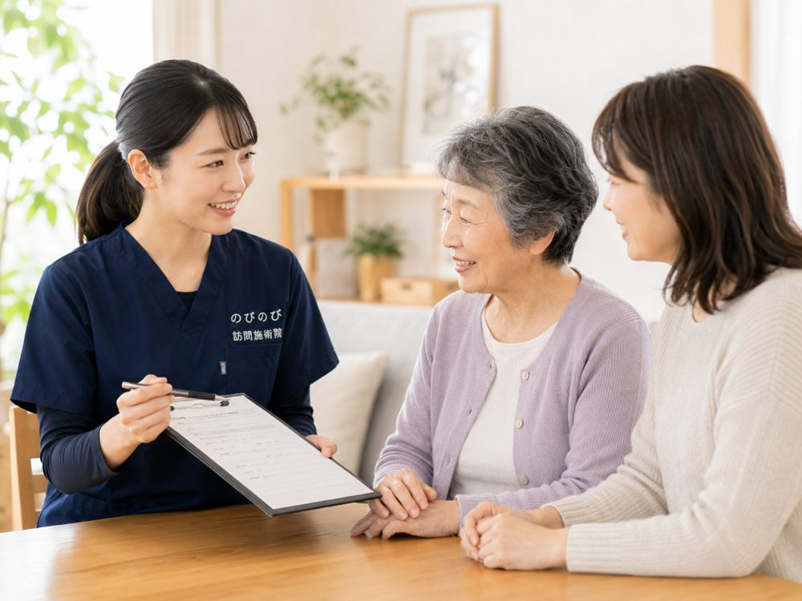

洗顔や歯みがき、食事のたびに、顔の片側に電気が走るような鋭い痛みが走る。三叉神経痛をはじめとする顔の痛みは、それだけで食べることも話すこともためらわせ、暮らしを細らせていきます。ただ、顔の痛みは脳や神経の病気が隠れていることもあります。だから最初の一歩は、鍼灸ではなく医療機関での診断です。受診の目安をはっきりお伝えしたうえで、診断と治療のあとに残る慢性のつらさへ、鍼灸がどんな形で手を添えられるのかを整理します。
先に結論を書きます。顔の痛みは、まず脳神経外科・神経内科・歯科口腔外科など、症状に合った医療機関で診断を受けるのが先決です。三叉神経痛は薬による治療や専門的な治療が中心で、鍼灸はそれに取って代わるものではありません。医師が慢性のつらさと判断し、同意書を出したうえで、首や肩まわりのこわばりを和らげる補助として、健康保険の訪問鍼灸マッサージを自宅で受けられます。費用は1回総額3,950円、自己負担は1割の方で約395円が目安。効き方には個人差があります。
三叉神経痛の痛みは、どんなふうに現れるか
三叉神経痛の痛みには、はっきりした特徴があります。顔の片側だけに、電気が走ったような、あるいは刃物で刺されたような鋭い痛みが突然おそってくる。それが数秒から長くても数十秒でスッと引き、しばらくするとまた繰り返す。この発作性が、鈍く重い肩こりの痛みとはまるで違うところです。
やっかいなのは、ごく小さな刺激で引き金が引かれてしまうことです。朝の洗顔で頬に手が触れた瞬間、歯みがきのブラシが歯ぐきをかすめたとき、食事でものを噛もうとしたとき、人と話していて口を動かしたとき。冬場に冷たい風が顔に当たっただけで走ることもあります。痛みそのものより、「またあの痛みが来るのでは」という怖さで、洗うことや食べること、しゃべることまでためらってしまう。そうして少しずつ暮らしが縮んでいくのが、この痛みのつらさです。
初めての強い顔面痛は、まず医療機関に
顔に激しい痛みを感じたとき、いちばん先に向かうべきなのは鍼灸院ではなく病院です。三叉神経痛の診断と治療は、脳神経内科・脳神経外科・ペインクリニックといった医療の領域にあります。似た痛みの裏に、別の病気が隠れていることもあるからです。
とくに次のような場合は、様子を見ずに受診してください。これまで経験したことのない強い顔面痛が急に始まった。痛みが日ごとに強くなっている。顔や手足のしびれ、麻痺をともなう。発熱がある。こうしたサインがあるときは、鍼灸で経過をみてよい段階ではありません。原因をはっきりさせ、必要な治療を受けることが何より先です。
診断も治療も医師の仕事、鍼灸は代わりにならない
三叉神経痛の治療には、痛みの伝わりを抑える飲み薬、神経ブロック、原因となっている血管の圧迫を取り除く手術など、医療でしか行えない方法があります。どれを選ぶか、どの順で進めるかを決めるのは医師です。
鍼灸はその治療の代わりにはなりません。三叉神経痛そのものを治すものでもありません。私たちがお手伝いできるのは、あくまで医師の治療を受けている方の、体の側面を楽にする補助的なケアです。ここを取り違えないことが、この痛みと付き合ううえで大事だと考えています。帯状疱疹のあとに顔や体に残る痛みなど、原因の違う神経の痛みもあります。詳しくは帯状疱疹のあとに続く痛み（帯状疱疹後神経痛）もあわせてご覧ください。
鍼灸ができるのは、首肩と顔まわりの緊張をゆるめること
強い痛みが続くと、体は自然とこわばります。痛む側をかばって首や肩に力が入りっぱなしになり、噛むことや話すことを避けるうちに、あごや頬の筋肉も硬くなっていく。この二次的なこわばりが、また体を重くします。
鍼灸マッサージがはたらきかけるのは、この部分です。首や肩、後頭部のこわばりをやさしくほぐし、痛みで固まった体を少し軽くする。血のめぐりをうながして、緊張がまた緊張を呼ぶ流れをゆるめていく。顔の痛みを直接消すのではなく、痛みでこわばった体全体を楽にすることで、日々を過ごしやすくするお手伝いです。効果の出かたには個人差があり、はっきり良くなる方もいれば、変化がゆるやかな方もいます。断定はできません。
発作を誘発しない、加減した施術
三叉神経痛のケアで最も気をつけるのは、施術そのものが発作の引き金にならないようにすることです。顔はわずかな刺激で痛みが走る場所ですから、痛む側に無理に触れることはしません。
実際には、まず首や肩など顔から離れたところから始め、その日の状態をうかがいながら進めます。顔まわりに触れる場合も、ごく軽く、痛みが出ない範囲にとどめる。少しでも「くる感じ」があればすぐに手を止め、方法を変えます。強く押せば効くというものではありません。むしろ加減を間違えないことが、このケアでは一番の技術だと思っています。
保険で受けるには、医師の同意書が要る
訪問鍼灸マッサージは、医療保険（療養費）を使って受けられます。そのために必要なのが、かかりつけの医師が書く同意書です。要介護認定は関係なく、認定を受けていない方でも同意書があれば対象になります。
保険の対象になるのは、神経痛・リウマチ・頸肩腕症候群・五十肩・腰痛症・頸椎捻挫後遺症の6つの症状です。三叉神経痛は、このうち「神経痛」の一種として、医師が施術の必要を認めた場合に医療保険の対象になりえます。三叉神経痛という病名がそのまま6疾病に並んでいるわけではなく、神経痛という枠のなかで判断される、と理解しておくと正確です。同意書の手続きは当院が進めますので、ご負担は大きくありません。神経痛と保険については神経痛は保険で受けられる？でもう少し詳しく説明しています。
費用と、家で受けられるということ
費用の目安をお伝えします。1回の施術は総額3,950円で、医療保険が使えると自己負担はぐっと下がります。1割の方でおよそ395円。仮に週2回のペースで続けても、1割負担なら月におよそ3,160円ほどです。関節を動かしにくくならないための機能訓練も、鍼灸に加えて行います。これらについて別途の料金はいただきません。
介護保険を使っている方でも、はり・きゅうの療養費は介護保険の支給限度額とは別の枠なので、あわせて利用できます。ただし同じ部位について、医療保険のリハビリと鍼灸を同じ日に算定することはできません。顔の痛みで外に出るのがつらい時期こそ、通わずに家で受けられる意味は大きいと感じます。ご本人だけでなく、ご家族やケアマネジャーからのご相談も歓迎します。まずは今の状態をうかがうところから始めさせてください。
よくある質問
顔の痛みがあるのですが、鍼灸だけで様子を見てもよいですか？
おすすめできません。顔の痛みは脳や神経の病気が背景にあることもあるため、まず脳神経外科や神経内科、必要に応じて歯科口腔外科などで診断を受けてください。鍼灸は、診断と必要な治療を受けたうえで残る慢性のつらさに、首肩まわりのこわばりを和らげる補助として取り入れるものです。
鍼灸で三叉神経痛は治りますか？
鍼灸は病気そのものを治す治療ではなく、慢性的なつらさとつきあっていくための補助ケアです。三叉神経痛は薬による治療や専門的な治療が中心になります。のびのびでは主に首肩まわりのこわばりを和らげており、効き方には個人差があります。まず主治医にご相談ください。
顔の痛みがつらい三叉神経痛でも受けられますか？
顔まわりの慢性的な痛みについて医師が必要と認め、同意書を出したうえで、ご自身での通院がむずかしければ対象になる場合があります。まずは脳神経外科や神経内科などで診断を受け、治療方針を確かめてください。
顔に直接、鍼をするのですか？
痛みの強い時期は、顔に無理に触れることはしません。首や肩など離れた部位から穏やかに和らげる進め方をとります。刺激の強さもその日の体調に合わせて加減し、我慢を強いることはありません。
今、薬で治療中ですが受けてよいですか？
治療中の方は、まず主治医に鍼灸を受けてよいか確認してください。鍼灸は治療の代わりではなく、それを補うものです。自己判断で薬や治療をやめることはせず、医師の方針を尊重しながら進めます。
急に強い痛みが出たときはどうすればよいですか？
急な激しい痛みや、頭痛・麻痺・ろれつの回りにくさ・視覚の異常・発熱などをともなうときは、鍼灸より先に医療機関を受診してください。緊急性があると感じたら、救急への相談も選択肢に入れてください。
費用は1回いくらで、介護保険の限度額に影響しますか？
1回総額3,950円で、自己負担は1割の方で約395円が目安です。別途の出張費はかからず、エリア内は同額です。費用は介護保険の区分支給限度額とは別枠なので、介護のサービスと併用しても限度額に影響しません。
本人が外出をいやがります。家族やケアマネから相談できますか？
ご家族やケアマネジャーの方からの相談も歓迎です。まず適切な医療機関での診断を前提に、そのうえで首肩のケアの部分を医療保険の鍼灸で支える形をとれます。ご本人の状態に合わせ、無理のない頻度を相談しながら決めていきます。

神経痛は保険で受けられる？坐骨神経痛など神経の痛み・しびれと訪問鍼灸マッサージの料金
続きを読む
顔面神経麻痺の後遺症を自宅でケア｜訪問鍼灸マッサージ
続きを読む
池田市で坐骨神経痛・腰から足の痛みにお悩みの方へ｜自宅で受けられる訪問鍼灸マッサージ
続きを読む
淀川区で坐骨神経痛・腰の痛みにお悩みの方へ｜自宅で受ける訪問鍼灸マッサージ
続きを読む
尼崎市で坐骨神経痛・腰から足の痛みにお悩みの方へ｜自宅で受けられる訪問鍼灸マッサージ
続きを読む